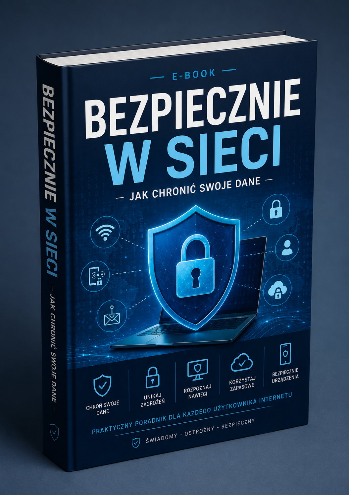

Praktyczny poradnik dla osób, które chcą bezpiecznie korzystać z internetu, chronić swoje dane osobowe i unikać najczęstszych zagrożeń w sieci. Materiał został przygotowany z myślą o początkujących i krok po kroku pokazuje, jak zwiększyć swoje bezpieczeństwo podczas korzystania z internetu.
✔ osób, które chcą bezpieczniej korzystać z internetu
✔ uczniów i studentów
✔ osób korzystających z bankowości internetowej
✔ osób aktywnych w mediach społecznościowych
✔ rodziców chcących lepiej chronić swoje dane i urządzenia
✔ osób, które nie mają dużej wiedzy technicznej
✔ każdego, kto chce zwiększyć swoją świadomość zagrożeń w sieci
Poradnik skupia się na sytuacjach, z którymi możesz spotkać się każdego dnia. Dowiesz się, na co zwracać uwagę podczas korzystania z poczty, bankowości internetowej, mediów społecznościowych, zakupów online oraz publicznych sieci Wi-Fi.
Nie musisz być ekspertem od informatyki. Materiał został przygotowany w prosty i przystępny sposób, dzięki czemu możesz rozpocząć naukę od podstaw i stopniowo wprowadzać lepsze zasady bezpieczeństwa do codziennego korzystania z internetu.
Praktyczny poradnik PDF dla osób, które chcą lepiej chronić swoje dane i bezpieczniej korzystać z internetu.